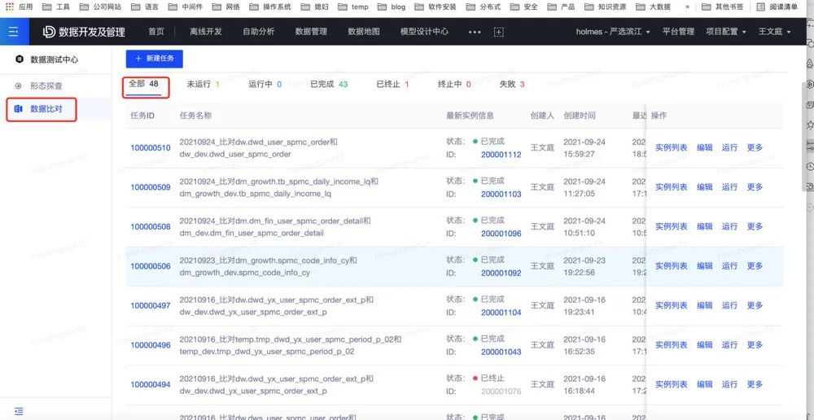
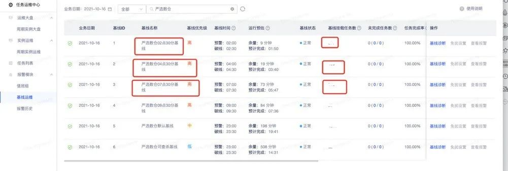
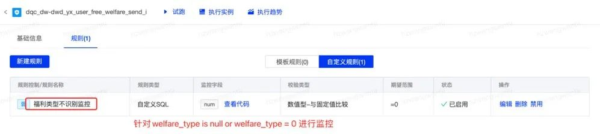
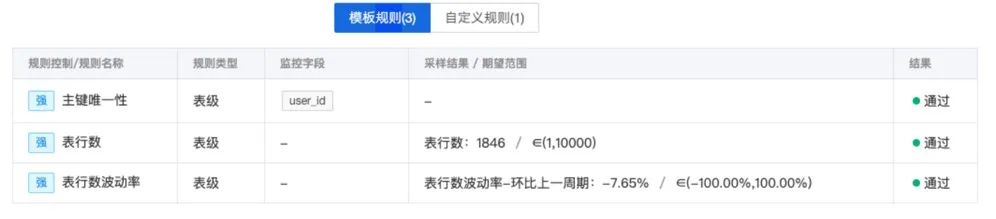
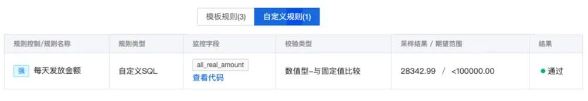
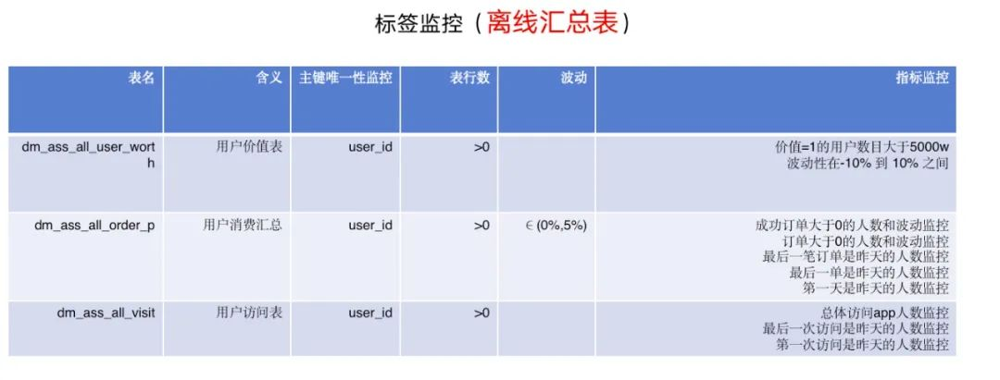
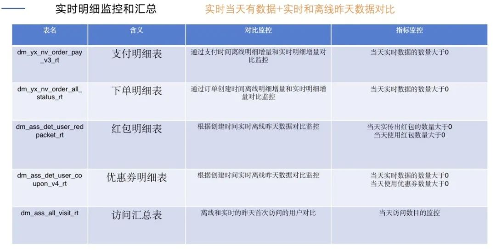
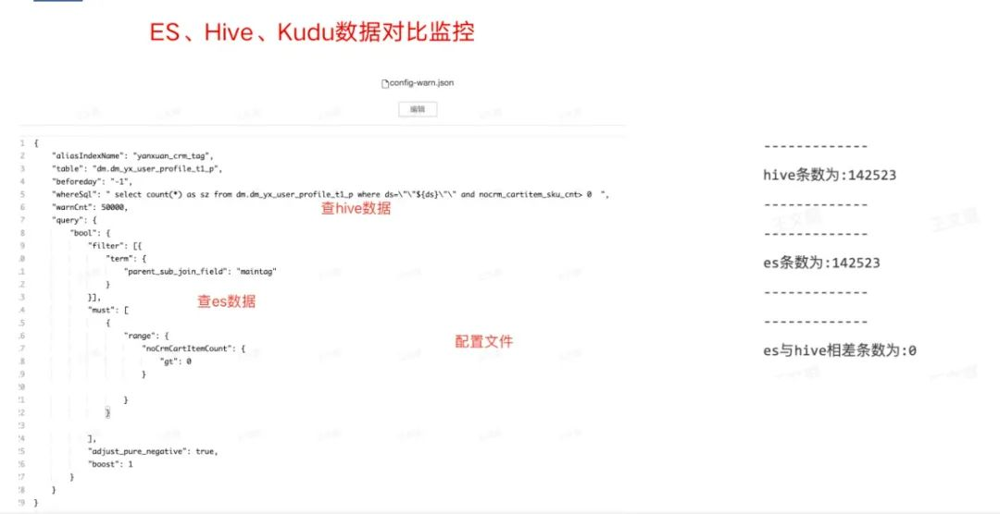
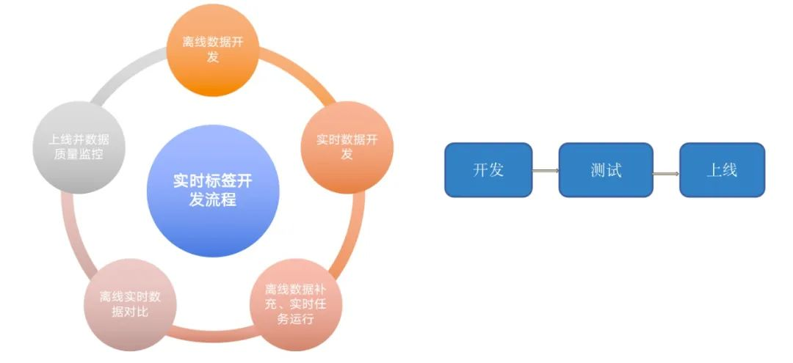
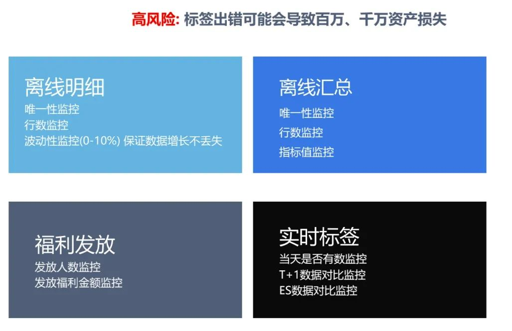

网易严选数据质量实践

Hi，我是王知无，一个大数据领域的原创作者。 放心关注我，获取更多行业的一手消息。
这篇文章将从三个方面给大家介绍：
第一部分，数据质量问题的危害和发生原因；
第二部分，如何保障数据质量；
第三部分，网易严选数据质量实践。
数据质量问题的危害和发生原因
1. 数据质量问题的危害
数据质量问题的危害通常体现在四个方面：数据的完整性、数据延迟、数据准确性、数据一致性。
数据完整性 犹记得2018年杭研和考拉一起共建数据中台，为了更好的了解业务，我驻扎到考拉现场。刚去几天，当时考拉的业务投诉数仓、说流量数据不正确，排查了半天，发现是流量数据丢失，原因是几台机器数据没有收集，最终定为P2事故。
数据延迟 在考拉呆了几个星期，有一天分析师和业务在群里吼，怎么数据还没有产出？都十点多了。原因是一个关键任务失败，报警电话给对应人没有叫起来，导致了整个数据延迟4小时+，定级P3事故。
数据准确性 2020年下半年严选由于一个任务节点依赖有问题，没有依赖到数据，导致了用户标签一堆老客当成了新客，造成了30w+的资损P1事故。
数据一致性 2020年 严选新客运营同学提出用户当前红包数据不准确，用户红包用掉了，怎么APP上还有浮层提醒，定位发现flink任务里面的一个task写ES的时候假死，其他task正常。
数据质量会导致资损、业务分析滞后、错误、算法模型不准确、数据质疑 等等问题，我们可以分析下具体的发生原因。
2. 数据质量问题发生的原因
原因可以总结为两个方面：系统不稳定、程序BUG
系统不稳定
埋点服务器配置更新或挂掉导致日志收集问题；
日志和数据库数据同步问题；
离线计算平台任务突然变慢卡死或失败问题；
实时计算平台任务Task卡死；
KAFKA压力大数据延迟。
程序bug
后端程序有Bug原始数据有问题；
数据开发程序有Bug；
实时任务和离线任务逻辑不一致；
上游数据变更未通知下游。
知道了发生数据质量问题的原因，接下来我们怎么防范呢？
如何保障数据质量
1. 采用规范的开发模式（解决后端和数据开发的Bug）
利用网易有数的中台产品：数据测试中心，做到开发->测试->上线监控流程
第一次开发的时候，探查数据形态(如枚举数量),进行唯一性检测,和业务确认数据量；
后期修改任务(业务改造)，通过主键，进行改造前后数据对比；
针对核心资产任务，进行code view机制，审批后提交上线；
上线后增加唯一性监控、行数监控、枚举值监控、指标值监控等相应监控。
2. 通过基线的机制保障数据及时性
利用网易有数的中台产品：任务运维中心，设置2点半基线->4点半基线->7点半基线，保证核心维表和dwd表、核心dws相关dwd表、核心dm层表及时产出
采用预警的方式提前白天处理,减少夜晚报警(如流量当天数据监控)；
采用值班机制、多次呼叫并升级，防止电话打不醒、任务延迟事故问题。
3. 数据质量监控
利用网易有数中台产品：数据质量中心，进行完整性、准确性、一致性监控
【完整性】针对当天日志的IP地址数目进行监控，如果发现IP减少进行白天报警规则，(避免第二天T+1任务出问题)；
【准确性】核心dwd和dim表进行行数、波动性、主键、枚举值监控保证准确性；
【准确性】核心dws指标、枚举 进行监控；
【一致性】针对实时和离线数据进行对比监控(Lambda架构) 针对不同存储引擎数据对比监控(如Mysql、ES、Kudu)。
保障数据质量的辅助产品已经到位了，我们是怎么实践的呢？
数据质量实践
1. 开发篇-超会改造
背景：
由于之前后端表设计不合理、导致新业务不能支持、业务后端需要改造。
改造过程：
业务10+表进行变更、甚至有一张表拆分成4+表的场景、业务含义、枚举大规模变更；
我们进行了20+数据模型对比，如果有问题反馈给业务后端改造

改造结果：
帮助主站后端找到8+问题，让其进行修复；保证了改造前后数仓数据一致性，最终成功上线切换。

2. 保障及时性
我们进行了轮班值班机制。每人3天，一个主值班人员、一个被值班人员。主要设立3条基线 2点半、4点半、7点半。

在基线我们有两种报警：一种预警、一种破线。
挂在基线里面的任务或者链路里面的任务失败，直接电话报警；
通过近14天排除掉最长运行时间和最短的运行时间进行链路计算时间，如果有可能破线，会进行基线破线电话报警。
通过预警我们不会进行电话报警，会采用短信、pop、邮件报警，如2点半基线在两点的时候没完成(缓冲半个小时)，这样白天我们进行任务优化。如果不长期优化，就会恶性循环，在破线的边缘徘徊。
如果值班人电话打不通没处理，会给被值班人员进行呼叫。
PS: 值班很痛苦、需要大家共同保障。
3. 保障完整性、准确性、一致性
日志监控
对于正常日志丢失，我们进行了IP数量的校验。

针对当天流量日志进行IP数量的监控，如大于多少台，以及波动性监控；当机器数量减少的时候触发报警。这里的报警要注意的点 是当天的流量数据，非T+1（如果半夜叫起处理的话基本也延迟了），也不存在阻断下游的概念。
如果有的日志有对应DB数据，此时还可以加上日志和db数据的对比较监控。
业务上游变更
业务上游变更可能会涉及到字段名称、类型，这种我们主要采用审批和变更提醒的方式进行防护，还有一种是业务的逻辑的变更。
case when a.topic = "getCartCoupon" then 1when a.topic = "getCoupon" and a.sub_welfare_type not in (6) then 2when a.topic = "pushSms" then 3when a.topic = "getCoupon" and a.sub_welfare_type in (6) then 6when a.topic = "openCard" then 6else 0 end as welfare_type,
数仓针对业务进行定义了枚举，当业务有新的类型产出的时候，我们可能识别不出来，那怎么能快速发现呢？答案如下：

重要资损模型
有时候数仓团队会出dm模型用来进行发放福利，这个如果稍有差错，就可能带来大的资损事故(钱的多少决定了事故的等级)，在这块我们会进行基础的监控和发放钱的监控。

如果当天需要发放超过10w就会阻断。

标签相关监控
在用户标签这块我们会有实时+离线的dm层明细数据、汇总数据，为了保障标签不带来资损，这块我们也进行了全方位的质量监控(这块类似于dwd 和dws 的数据监控)。
比如在明细数据这块我们主要进行了唯一性和行数以及波动性的检测。

汇总数据这块我们除了基础唯一性、行数、波动性的检测外加了指标监控。

在实时和离线这块我们进行了对比监控。

对于标签，除了存储hive kudu外还会存储到ES和Hbase里面，所以我们还加了数据对比监控。

事实证明，只有完善的监控才能保证标签的整体质量。
总结
最后总结下在数据质量实践过程中沉淀的方法。第一个沉淀了实时标签开发流程规范：

第二个是沉淀了质量监控的方法：

以上是我今天介绍的内容，希望能给大家带来一些借鉴，谢谢。
如果这个文章对你有帮助，不要忘记 「在看」 「点赞」 「收藏」 三连啊喂！